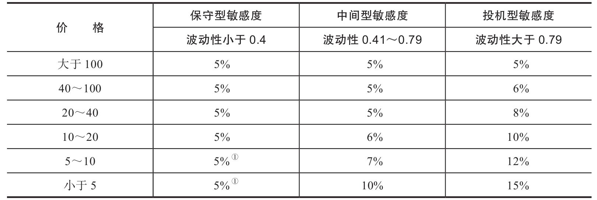

第27章 止损指令
我们将介绍两类止损指令，确切地说，是使用止损指令两种不同的方法。
第一类指令是保护性止损指令。这一话题通常比较沉重，使用此类指令更像是在救火，只有在情况岌岌可危的时候才用来救急。
保护性止损指令主要用于危急时刻。你可以在某一底部之下的安全范围内设定一个止损位。股票会击穿底部，触及止损位并在该位置建立新的反弹底部，或立即反弹创出新高。设定止损依然有其意义：股价变化无常，意外时有发生，现实中也并不存在任何葵花宝典。因此，与其直面无常和恐慌，不如全身而退，哪怕承担一些损失。如果股价开始下跌，你很难预料事态恶化的程度，这时如果又缺少止损位的保护，你可能会任凭股价持续走低，并期待反弹的到来。最后，你会发现（也是无数过来人的教训）起初无关痛痒的小幅下跌，最后可能会带来灾难性的后果。止损指令不可经常使用，在某些活跃股的交易中，交易所可能会限制止损指令的使用。
问题是在何时、何地设立止损位？对此问题尚无完美和绝对适合的规则可用。如果止损位离反弹过近，你可能会承担不必要的损失；卖掉的股票可能随后反弹并一直上涨甚至达到盈亏平衡。如果过远，那么一旦走势突破形态，你也可能会承担不必要的损失。
显然，设定止损位取决于股价及其走势规律。卖价为80美元的保守型高价股的止损位显然不同于卖价为8美元的投机型低价股。
高价股一般波动幅度较小，而低价股波动幅度较大。因此，低价股在交易中有较大的回旋余地。相比波动性较小的“蓝筹股”，低价股的止损间隔更大。
同样地，我们可以通过敏感度指标（编者按：用于衡量股票相对市场的贝塔系数，以及个股波动性的绝对值指标）来研究个股的走势规律。尽管两只股票可能在某一时刻的交易价格相同，但高贝塔系数、高波动性的股票波幅一般会大于低贝塔系数、低波动性的股票，因此高波动性股票的止损间隔更大。
我们必须考虑以上因素，并总结出一些简单的经验法则。假设有一只走势“平均”的股票，其价格为25美元，止损位设在最后一个长线底部之下5%的水平。
假设另一只股票的敏感度与其相等，但卖价为5美元，那么该股票的止损位需较前一只股票低50%，即在最后一个长线底部之下7.5%的水平（第9版编者按：相当之低）。
（第10版编者按：以下表格最早由迈吉根据敏感度指标绘制。聪明的读者可能会发现该表格是迈吉敏感度指标的变体，我根据波动性对止损间隔进行了动态调整，使其更符合当前的市场环境。）
一旦实盘或虚盘交易开始，止损位就应在图表中以横线标记出来，并一直维持到交易结束或在触发跟进性止损（稍后解释）时取消。对买盘来说，止损位通常位于上一个短线底部之下某一区间内；对卖空而言，止损位通常位于上一个短线顶部之上某一区间内。要确定止损位的确切位置，只需算出股价的变动幅度。如果一只股票的卖价为30美元，且变动为10%，则该股票的止损位应位于上一个短线底部之下3个点的位置。
即使对最保守的高价股，也不要将保护性止损位设在小于5%的区间内。
那么，到底什么是短线底部和短线顶部？它们的构成条件是什么？该如何选择止损间隔的基准点呢（第9版编者按：参见第28章）？下一章我们将介绍底部和顶部的构成条件（第10版编者按：波段高点和波段低点）。现在，先假设我们已确定了正确的基准点，并且在每一次进场时坚持设定止损位。
表27-1 止损间隔表（以股价的百分比表示）

①股价位于该区间的股票通常不属于保守型股票。
值得注意的是，多头的保护性止损位从来不会下移，空头的止损位也从来不会上移。只要股价沿正确方向变动超过一定距离，则可以设定新的基准点，止损位也相应向上（多头）或向下（空头）调整，方法与设定原始位置的方法相同。
27.1 跟进性止损
我们还要介绍一种止损方法，即设置跟进性止损点。通常用于卖出前期上涨的股票，或在股票完成一段涨势或击穿前期短线底部之前给出危险信号时，卖出该股。
你会发现，在很多时候，股票会先涨几天，然后成交突然放量。通常情况下，这意味着股价到达了一条重要的趋势线、形态界线或某个阻力区。此时的放量可能表示两种情况。通常这代表短线趋势已经结束，股价暂时已经触顶。但有时，这也可能意味着股价即将开始直线上涨，涨幅可能达到几个（或很多）点。（股价下跌时情况则相反。）
如果你注意到股票连涨几天后成交放量，并判断这表示涨势已经结束，然后以市价指令或限价指令卖出股票，那么当股价第2天向上跳空，并在接下来几天持续以3点、5点或20点的涨幅攀升时，你一定会追悔莫及。但历史数据显示，这种情况发生的概率并不大。你会发现，及时平仓10次里有9次都是正确的选择。
那么，在出现成交放量的这天（前提是这不是股价突破前期短线顶部，达到新高的第1天），你应该撤销保护性止损指令，为这天设置跟进性止损指令，具体位置应该设在收盘价以下1/8（0.125）美元处。举例来说，你以21美元买入了一只股票。该股交投稳定，持续上涨，某天股价突破了前期短线顶部，达到23美元，并伴有高成交量。第2天，该股继续上涨，交投稳定，达到23¾美元。第3天，股价继续稳步上涨至24¼美元。最后，第4天该股涨到25美元，且成交量显著高于此前任何一天的成交量，仅低于突破23美元的那一天。股价收于25美元的第2天，你会发现成交量给出了信号。你应该撤销保护性止损指令（可能在18美元处），当天在24⅞美元处设置一个跟进性止损指令。大多数情况下，这意味着当天第一笔卖盘就会触发你的跟进性止损指令。你收到的卖价会比市价稍低一些。但另一方面，经历了前一天的活跃交投后，市场上应该有不少的潜在买盘，这就意味着你大有可能以跟进性止损的价格或最高价卖出股票。
同时，如果股价继续上涨，你也不会损失涨势带来的利润。假设你在24⅞美元处设置了跟进性止损点，然后股价当天向上跳空，以25¼美元开盘，并持续上涨，收于26美元。（在这类股价“逃逸”上涨的过程中，每天的收盘价很可能是当天的最高价。）然后，你应该在25⅞美元为单日设置一个止损点。如果第2天股价以26⅜美元开盘，并涨至28美元，你应该再次在27⅝美元处设置止损点。现在，我们假设，第2天的开盘价最终也达到27⅝美元。在上述例子中，你只为第1天的1/8美元冒了险，最终收获了净利润2⅝美元。而且这2⅝美元完全是净利润，因为不管怎样你的交易佣金都是一样的。
这类跟进性止损点可以通过任何记号在图表上进行标记，比如小对角线。当某只股票的涨势持续数天时，你可以每天在收盘价以下的1/8美元处画上一个记号，直至股价某天触及止损点。卖空时，我们使用买入止损，这和我们上文描述的卖出止损形式完全相同，紧紧跟随股价下跌的曲线。
当某只股票以高成交量涨到某个合理的目标价位，或突破目标价位并跳脱了趋势通道，或没有触及目标价位时，我们就可以进行设置一个紧密的跟进性止损指令的操作。
如果你的某只股票正在趋势通道内上升，突然在通道高度的中点处放量，那么设置一个紧密的跟进性止损指令就可以保护你不受趋势失效的影响。在这种情况下，如果股价在突破通道并超过前期短线高点前就爆发出天量，那么这绝对是一个预警信号。如果此时有缺口或单日反转出现，那么我们应该加倍警惕。
成交放量后，只有在一种情况下我们可以不设置紧密的止损指令，那就是股价创新高，远超前期短线高点并收于高点之上时。这种情况表示涨势尚未结束。如果涨势继续，并再次出现天量，即使是第2天就出现，我们也应该立刻设置跟进性止损点。
本章（以及本书）提到的“成交放量”是相对于某只股票最近一次交易的大小而言的。1000股可能对于某只流通盘较小的股票来说已经算是放量，但对于交投活跃的个股来说，10000股可能也只是正常的交易规模。成交量图表会通过成交高峰展现出成交量异常高的交易日。
需要指出的是，我们介绍设置跟进性止损指令的目的在于获取短线利润，或在利润可观的中线涨势见顶时及时平仓。虽然需要进行此类操作的极端情况不能说罕见，但也绝不是每天都会出现的市场状况。以一个普通的短线顶部为例，即使根据趋势通道、成交高峰和其他指标来看，短线顶部已经非常明了，很多交易者和投资者还是会选择按兵不动，直至回调出现，而不是交上一笔交易佣金，在涨势还未结束时提前平仓。
简而言之，跟进性止损指令非常有用，但是是用来应对特殊甚至异常的市场状况的。
与之相比，保护性止损指令可以保护普通投资者和交易新手。这类投资者不可能每分每秒都紧盯市场动向，保护性止损指令可以帮助他们限制潜在的损失。在他们不愿平仓时，该指令会自动平仓，避免他们的资金被套牢。不论他们最终的结果是赚还是赔，止损指令被触发后都会自动平仓，这样一来，他们可以将释放的资金用在前景更明朗的股票上，也不用担心原先的股票在下跌后是否还有回升的可能。
如果投资者本身有足够的知识和决心，能在有证据表明趋势反转时坚定离场，那么他就没有设置止损指令的必要了。（编者按：编辑认为，只有经验丰富的投资者才可以不设置止损。本书读者可以检视一下自己的投资组合，看看自己是否曾经让亏损一直扩大或是放跑了一段重要的涨势。如果有的话，那么你就不属于“经验丰富”的投资者。）这样的投资者有可能在不设置止损的情况下成功地进行交易。事实上，不设置止损也有一些好处，因为止损指令有时会受到假趋势或是漫长的调整期的影响。此外，如果你是一个经验丰富的技术派投资者，并且着眼于长线或是愿意等待中线调整的出现，那么不设置止损也有益处。但对于不确定自己交易方法的投资者来说，过早平仓总比将股票从60美元捂至5美元好太多！
27.2 止损的规则与方法
在投资和交易中，最重要的两个概念是趋势和止损。看对趋势，就能显著地降低亏损风险、提高获利机会。
但是，如果不能妥善地设置止损位，那么由于市场跌宕起伏且会发出假信号，我们的全部工作和研究都可能功亏一篑。如果我们不在分析的基础上设置止损位，那么我们的胜算将不会大于那些根据亲友建议和传言投资的人。
所以，让我们先从趋势追随型投资者的角度思考这个问题，然后再研究交易止损位。在迈吉为趋势追随者设计的方法中，有两种基本的止损法。一种是根据倾斜及水平趋势线来止损，另一种是利用基准点来止损。本书已用大量篇幅阐述了前者。第28章将详细介绍基准点。
趋势线的突破总是很明显的。迈吉要求股价击穿趋势线达到2%～3%，以此为检验突破是否有效的标准。这条标准也许不完美，却适用于大多数情况。趋势线越长，突破的效力就越强，比如2008年和2011年的市场突破（都突破了700日以上的趋势线）。网站http://www/edwards-magee.com 上有当时对这些突破的杀伤力的测算与评论。图5-1展示了2008年所有3种方法同时建议离场或做空股市的场景。趋势线分析、形态分析、基准点分析在本质上是互为补充的，会得出相似的结论，例如在2011年8月，股价跌破一条从2009年3月延续到那时的长期趋势线，完成头肩顶形态，同时触发基准点止损。
这样，我们针对持续的趋势，有3种设置止损位的方法：趋势线法、形态法、基准点法。是否还有其他止损法？实际上有很多，但我们先讨论趋势中的止损法这一关键问题。
如果止损位设置得离市价太近，那么交易者会很容易失去自己的仓位。止损位必须给市场调整留出一定的空间。当股价逐波上攻时，根据基准点法，止损位必须离各波段的最低点有足够距离，以免太早触发止损。据《金融怪杰》一书记载，该书作者杰克·施瓦格问交易高手布鲁斯·柯夫纳（Bruce Kovner）在哪儿设置止损位，对方回答：“股价不容易到达的地方。”
这正是基准点止损法的原则。因为场内自营商和市场投机客会试探波段低点及支撑区的止损设置情况，所以在设置止损位时要留出一定的余地，设得比波段低点（或波段高点）低一些。这样的止损位就是“股价不容易到达的地方”。
当使用移动平均线时，上述原则也适用。迈吉对趋势线使用2%或3%的止损位，此类止损位基本上也适用于移动平均线。同时，如果市场人气火爆、股价剧烈波动，那么交易者必须调整为止损位留出的余地。在市场上涨的过程中，如果你使用移动平均线来观察走势，那么移动止损位应该逐日升高。当然，止损位离移动平均线要有一定的余地，它可随着市场波动率的增加而扩大。
27.3 关于止损方法的简述
我们在这里主要讨论离场止损位。（我的专著《信号》（Signals）详细分析了把握趋势进行交易的方法。）许多交易者利用止损位进入仓位，但那不是我们此处的讨论重点。我们希望知道怎样保护初始仓位、怎样调整止损位，从而锁定利润。初始止损位可以随基准点设置（如第28章所述），或设在支撑/阻力区的上方或下方，或设为一个百分比（威廉·欧尼尔认为止损位应在买入价以下8%处），或是交易者资金总额的一个百分比，例如每笔交易的风险控制在2%，对于10万美元资金就在亏损达到2000美元时止损。
如果市场的走势与我们预计的相反，那么保护性止损位就能有效地限制损失。而如果市场的走势正如我们所愿，那么我们就面对着一个不同的问题。市场迟早会出现较大的向下调整，考验我们的持仓信心。我们是趋势追随者，因此我们买入强势股、卖出弱势股。但是，我们的对手是反向操作者（contrarian），其行为与我们相反。因此在市场出现一波合理的上涨后，反向操作者将获利了结，从而打压股价。波段交易者会做同样的事。我们希望在趋势不变（即使有调整）时坚定持仓，直到趋势反转。基准点止损法能做到这点，其必然结果就是持仓价值的波动。长期经验显示，在市场小幅下行时就离场，势必导致长期利润偏低；接受市场的下行与利润的波动，则能获得较高的长线利润。请参见道指和基准点的表现列表。在表中，道指调整10%乃至30%后维持原有趋势的情况屡见不鲜。除了趋势分析和基准点分析，还有其他一些关于止损的理念及方法。
27.4 其他止损方法
27.4.1 真实波动幅度均值
真实波动幅度均值（ATR）实际上是一个波动率指标，能向我们提供一些有用信息。真实波动幅度（true range）的定义是以下3项中的最大者：今日最高价减今日最低价之差；今日最高价减昨日收盘价之差；今日最低价减昨日收盘价之差。
ATR是特定时期内真实波动幅度的平均数。这段时期通常取14天或20天。5天的ATR非常敏感，既有优点也有缺点。
ATR可以用于设置止损位。例如，我们可将初始保护性止损位设在买入价以下2（或x）个ATR的位置。我们还可按同样的方法，将移动止损位设在近期高点（或近期高点中的较低者）以下x个ATR的位置，以此来保护利润。
将止损位设得这么高的，一般是短线交易者。在我认识的职业交易者中，至少有一位（艾瑞克·克里滕登（Eric Crittenden），http://www.blackstarfunds.com ）认为，如果股价触及最近高点以下10个ATR处的止损位，那么上涨趋势就已经反转。这一般被称为“吊灯止损指标”（Chandelier Exit）。此类概念可以通过趋势线和反转形态来检验。ATR是一种衡量市场波动性的自然方法，它会有节奏地根据市场行为而调整。因此，与固定百分比或固定金额相比，ATR更加灵活。关于克里滕登的方法，你可在网址http://www.trendfollowing.com/whitepaper/Does_trendfollowing_work_on_stocks.pdf 上找到一篇有用的介绍。克里滕登发现10个ATR的距离平均约为27%，因此27%的回撤就意味着趋势反转。
27.4.2 抛物线状止损和反转指标
威尔斯·怀尔德（Welles Wilder）于1978年提出了“抛物线状止损和反转指标”（SAR），其中应用了一个“加速因子”（acceleration factor）。在这一方法下，止损位呈抛物线状上升。显然，这种方法既有优点，也有缺点。后来查克·勒博（Chuck LeBeau）对加速因子进行了微调，提出了“修正抛物线状止损指标”（Modified Parabolic Exit），你可在网址http://lcchong.files.wordpress.com/2011/05/precise-exits-entries-manual.pdf 上找到相关介绍。
27.4.3 目标止损法
我并非目标止损法的拥趸。但是，许多交易者会分析股价走势形态或市场情况，计算股价可能到达的目标位，然后在股价到达目标位时离场。他们还会使用金额、百分比等其他目标标准，或按照比尔·司各特（Bill Scott）的做法，若股价连续5天下跌就抛出一半持仓，若第6天还下跌就抛出另一半。
与目标法相似，当利润达到x%时提高移动止损位，然后随着股价的上涨继续提高它。日本有一句老话：“当价格创下8次新高时卖出一半，当价格创下10次新高时再卖出一半，然后在价格创下12次新高时清仓。”
类似地，有的交易者在市场沿自己预期的方向出现极端走势时，往往选择清仓。
27.5 海龟交易员使用的自然止损法
海龟交易员使用的标准是，当股价跌破10日通道时，就抛出多头仓位。这个标准可修正为3日通道，此时若市场继续上扬，则交易者会根据3天的低点，设置一个非常贴近市价的止损位。这种情况也可用迈吉的紧密跟进止损法来应对，即逐日提高止损位，使其略低于当日最低点。
最后，想必读者也能看到，有多少交易者，就有多少止损方法。而对我们自己来说，一个方法越是自然、需要的演算越少，这个方法就越好。于是我们又回到了趋势线、形态、基准点。这些方法可根据个人的偏好微调。
如果存在一条关于市场的真理，那么它就是：若不懂得止损，很快就会亏本。